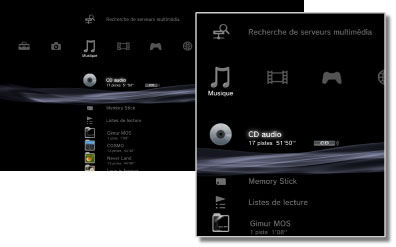

Musique > Catégorie Musique
Catégorie Musique
Les icônes suivantes sont affichées sous (Musique). Les icônes affichées varient en fonction des conditions d'utilisation.

 |
(Nom du titre) | Pour afficher le mini-panneau de configuration. Cette icône ne s'affiche que pendant la lecture de musique. |
|---|---|---|
 |
Recherche de serveurs multimédia | Pour lancer une recherche des serveurs multimédia DLNA connectés au même réseau. |
 |
Serveur multimédia | Pour vous connecter à des serveurs multimédia DLNA et lire la musique enregistrée. L'icône affichée dépend du type de serveur. |
 |
(nom du titre) | Pour lire un Super Audio CD. |
 |
(titre CD) | Pour lire un CD audio. |
 |
Disque de données | Pour lire des fichiers de musique enregistrés sur un support disque inscriptible compatible comme un CD-R ou un DVD-R. |
|
Disque DSD | Pour lire des fichiers de musique au format DSD enregistrés sur un support compatible, tel qu'un DVD-R. |
 |
Memory Stick™ | Pour lire des fichiers musicaux enregistrés sur un support Memory Stick™.* |
 |
SD Memory Card | Pour lire des fichiers musicaux enregistrés sur une SD Memory Card.* |
 |
CompactFlash® | Pour lire des fichiers musicaux enregistrés sur une carte CompactFlash®.* |
 |
PSP™ (PlayStation®Portable) | Pour lire des fichiers musicaux enregistrés sur un support Memory Stick™ du système PSP™. |
 |
PSP™(PlayStation®Portable) | Pour afficher des fichiers images enregistrés dans le stockage système du système PSP™go. |
 |
Appareil photo numérique | Pour lire des fichiers musicaux enregistrés sur un appareil photo numérique. |
 |
WALKMAN®/ATRAC Audio Device (WALKMAN®) | Pour lire des fichiers musicaux enregistrés sur un WALKMAN®/ATRAC Audio Device (WALKMAN®). |
 |
ATRAC Audio Device | Pour lire des fichiers musicaux enregistrés sur un ATRAC Audio Device. |
 |
Périphérique USB | Pour lire des fichiers musicaux enregistrés sur un périphérique de stockage de masse USB. |
 |
Listes de lecture | Vous pouvez créer des listes de lecture, ou encore modifier ou lire des listes de lecture créées. |
 |
(dossier) | Cette icône est affichée pour les dossiers créés sur le support de stockage à l'aide d'un ordinateur. |
 |
(fichiers enregistrés sur le disque dur) | Pour lire des fichiers musicaux enregistrés sur le disque dur du système PS3™. Lorsque des données image sont disponibles, les images miniatures sont affichées. |
| * |
Un adaptateur USB approprié (non fourni) est nécessaire pour utiliser le support de stockage avec certains modèles. En cas d'utilisation avec un adaptateur USB, le support de stockage s'affiche en tant que |
|---|
 (Périphérique USB).
(Périphérique USB).Conseils
- Pour plus de détails sur DLNA, consultez
 (Paramètres) >
(Paramètres) >  (Paramètres réseau) > [Connexion à serveur multimédia].
(Paramètres réseau) > [Connexion à serveur multimédia]. - Dans de rares cas, il se peut que le système PS3™ soit incapable de lire correctement des disques et d'autres supports. Cela est principalement dû à des différences en matière de processus de fabrication ou d'encodage du logiciel.
- Lorsque la sortie audio des Super Audio CD passe par le connecteur DIGITAL OUT (OPTICAL) du système, elle est reproduite en lecture simplifiée (lecture à 44,1 kHz en 16 bits).
Avis
Les Super Audio CD ne peuvent pas être lus sur certains systèmes PS3™. Pour plus de détails, consultez la section [Types de disques lisibles].